Travel has been a passion of mine and I am so happy to have had the experiences I've had and I hope to have many more.
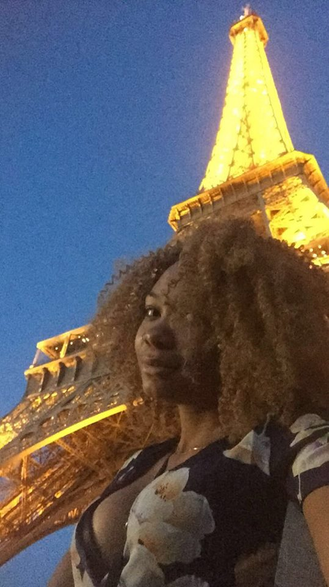 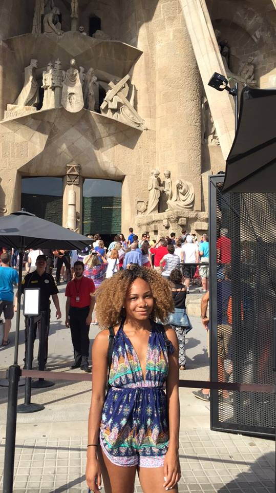 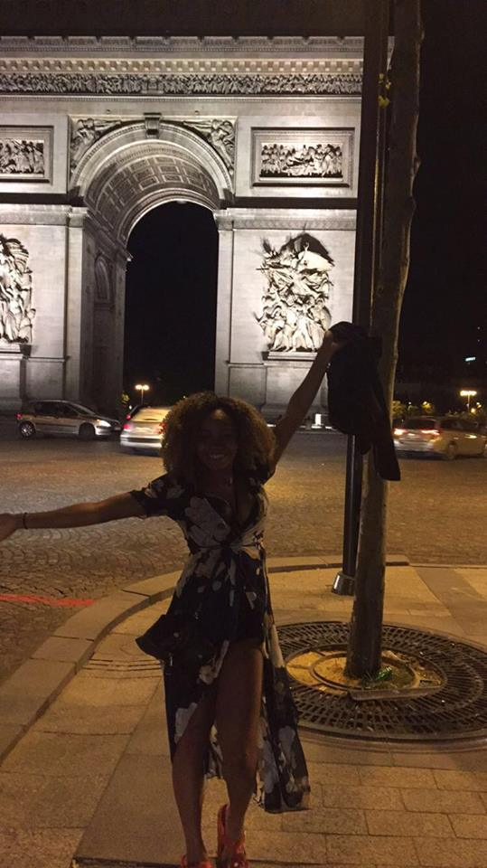Study Abroad
Italy
To graduate from Mizzou with an International Degree, Study broad was required. I had spoken with the CEO of a company who told me it would be in my best interest to not go on a group study abroad with my school but if possible to go on a Study Abroad where I was immersed in a culture. I agreed. So, I set out to fina program that would allow me to do just that, and I did. I then had to make a hard choice, I had studied both French and Spanish for a long time, I was very familiar with both cultures. I could have easily gone to South America or the islands and had the same experiences that I was used to, so I chose Italy. The language was not so far off that I would be lost if somethig were to go wrong but different enough that I would have to challenge myself. It has been one of the best decisions I have made as an adult. The moment i got to Italy I was in love. I flew into Bologna and the city was still bustling with college students. I quickly found a cab who gave me an excellent guided tour of the city as he drove me to my connecting train to Venice. Still, with no cell service, I traveled a little nervously through the night towards a summer that would change my whole college experience. My summer in Venice was filled with art as I work as a marketer and curator for the biennale festival. New friends from every corner of the world. Espresso, Chocolate Croissant, Gelato, Wine, Spritz, and late night dinners all from my favorite places of course. Travel from the North to the South of Italy. Life where church and state cohabitated and of course a better understanding of what it means to be Italian.
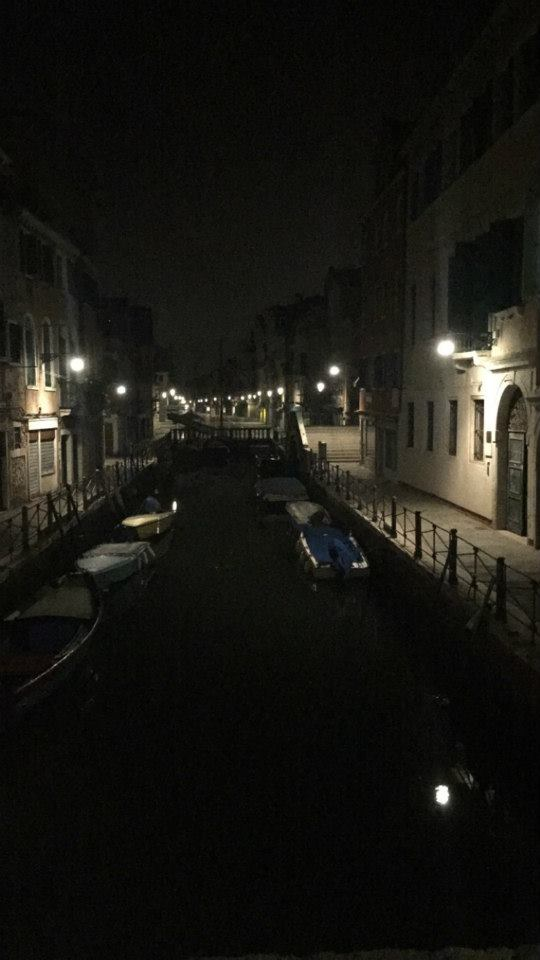 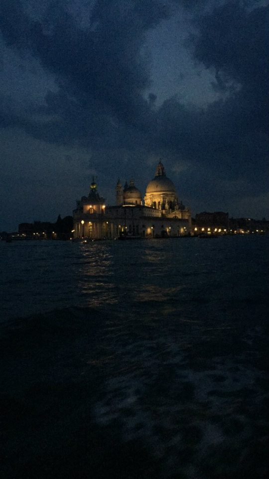 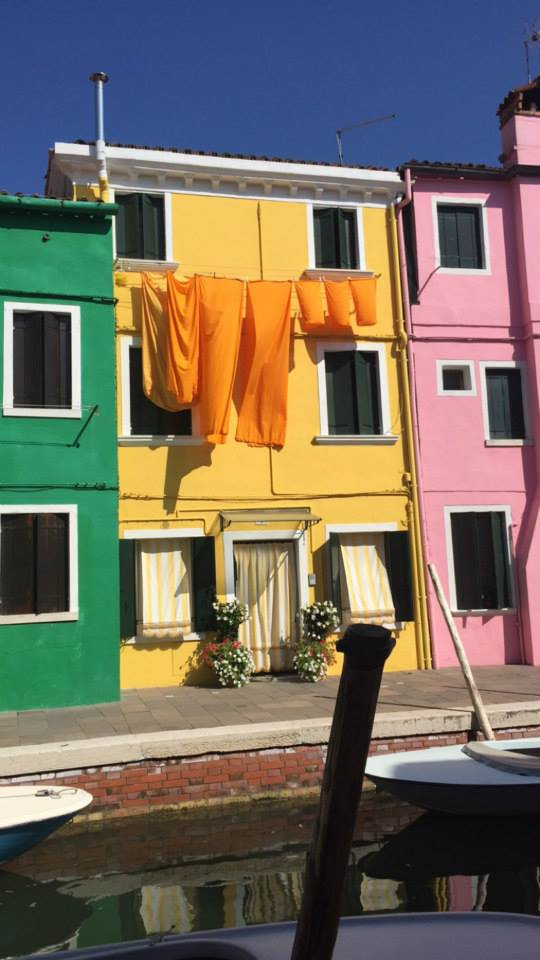 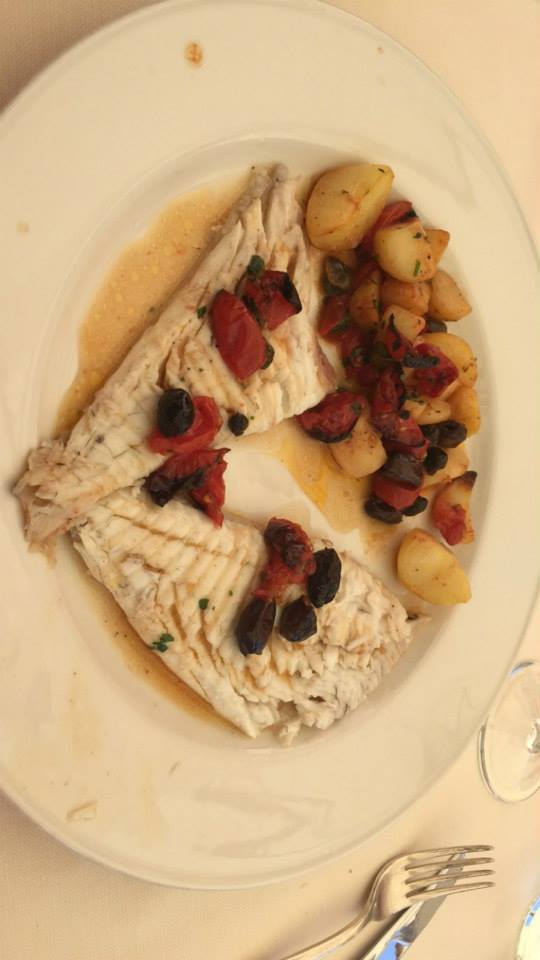 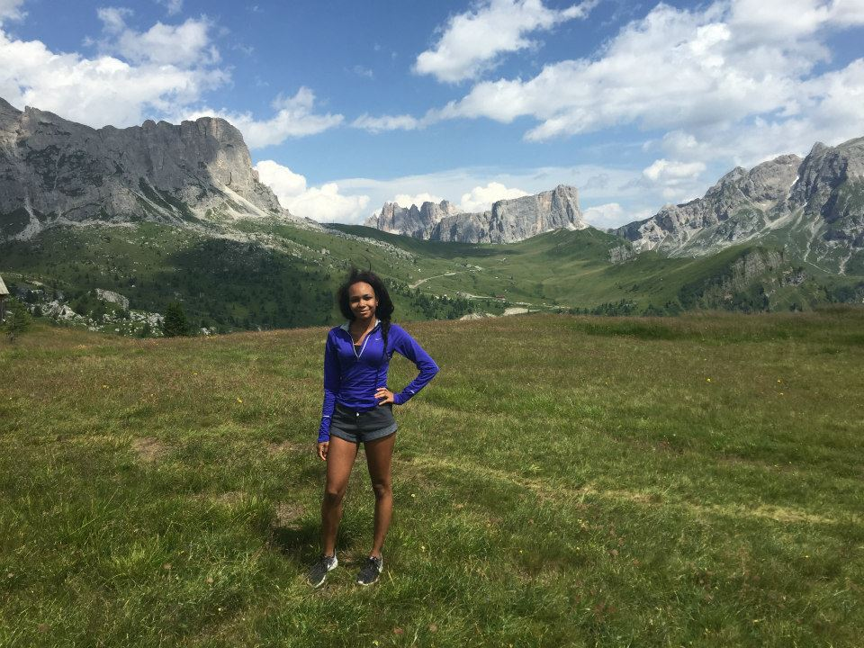 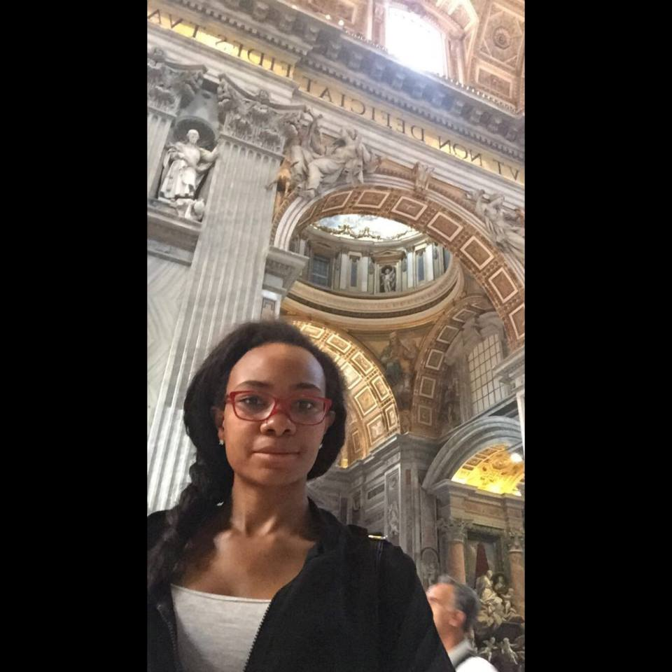Cuba
Cuba has always been a dream vacation of mine so when the ports were opened back up we were lucky enough to qualify for a special visit. A few things that I wat to point out about Cuba are taht there is absolutely no cell service on the island, and the money you come with is all you can use because there are no atms or American banks on the island. Our trip to Cuba started off very rocky, the island was hit with a hurricane. The first hit the day before we were supposed to fly out so we postponed our trip by a week and a half. As that date approached there was talk that anpther hurricane could be heading to Cuba in the middle of our trip. As stupid as it may sound we decided that we would take our chance and fly to Cuba. It was quite the experience. As I mentioned before we had no access to money on the island so with a couple hundred dollars in tow we made our way to the exchange office to figure out exactly how CUP and CUC worked because up until this point I had dealt strictly in € and Dollars. Once we figured that out it was off to the races. Cuba was everythng I had pictured it to be and everything I hadn't. In Cuba we literally danced in the street, we rode in classic cars, and we drank $2 mojitos like they we're water. We also experienced rolling blackouts, food shortages, and the inability to have clean drinking water everywhere. The spanish they spoke had involved into its on language from isolation and the country was still reeling from being hit with a hurricane. None of that stopped them, so we didn't let it stop us. We lived in Cuba, a world wehre we could not constantly share each moment with our social media and no one knew what our day in and day out was. We never even knew what the weather was becaus the TV in our Air BnB played on a loop. My boyfriend and I really grew as a couple and Cuba; we also started to see that being disconnected wasn't as scary as it seemed after all these years of being 100% plugged in but rather when you looked up and saw the world you found beauty in places you least expected.
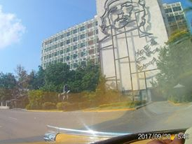 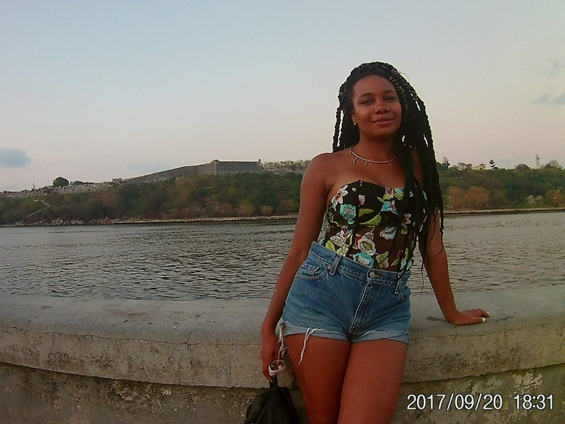 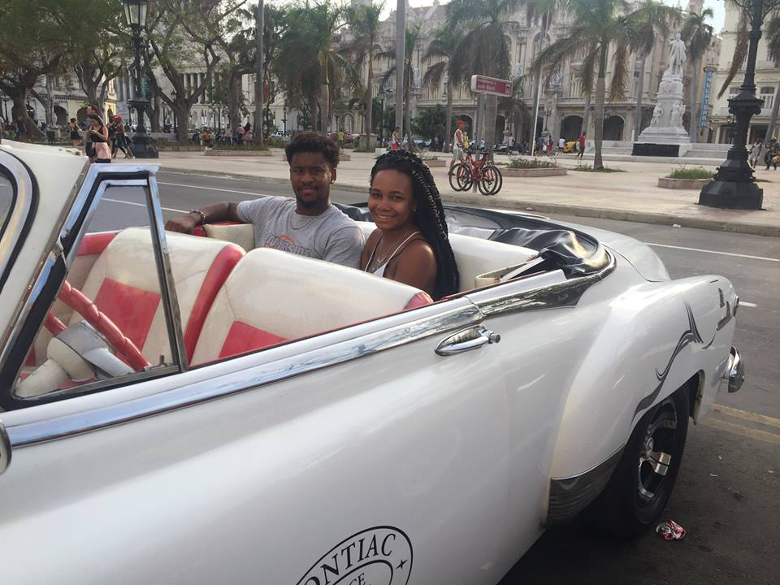 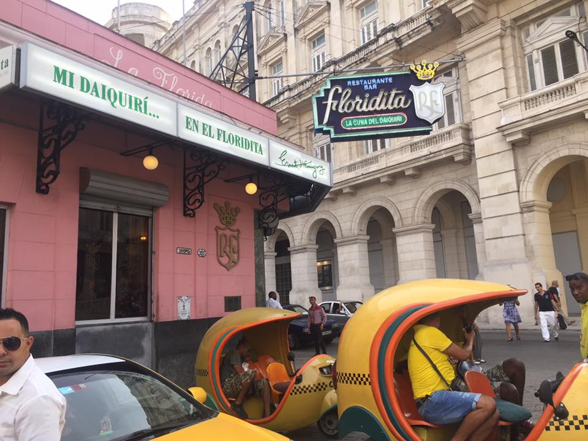 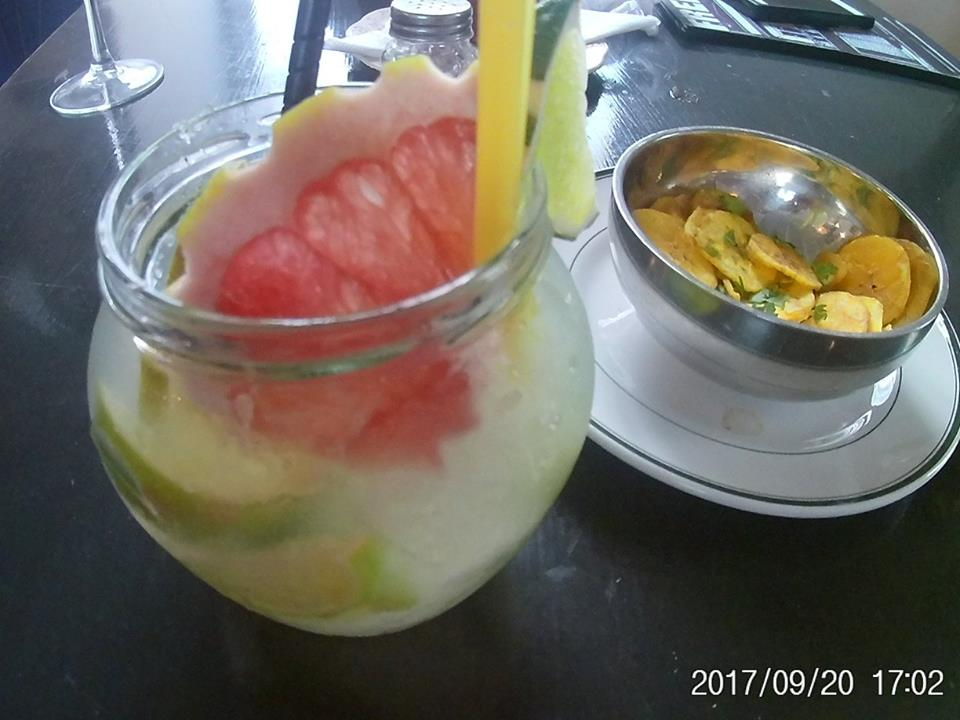